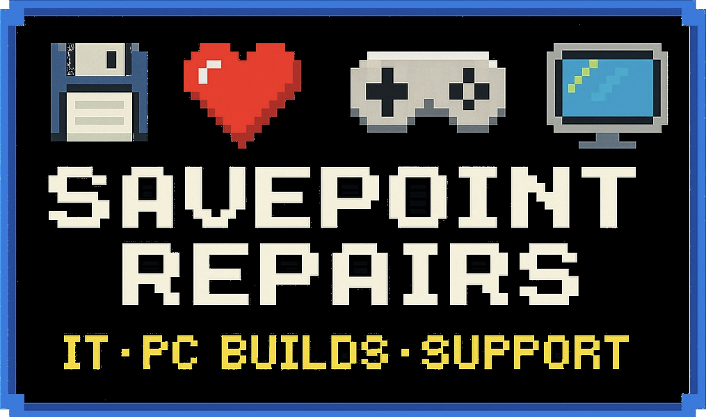

Fast, Reliable Computer Repair in East Longmeadow
PC repair, virus removal, WiFi troubleshooting, upgrades, and one-on-one tech support for homes and small businesses.
- ✔ Slow computer? We can help.
- ✔ WiFi issues or setup problems? We can help.
- ✔ Need an upgrade, cleanup, or fresh install? We can help.
- ✔ Same-day service available.
- ✔ No fix, no charge.
About
SavePoint Repairs provides dependable computer repair and tech support for home users, small businesses, and gamers in East Longmeadow and surrounding areas. From slow PCs and boot issues to malware cleanup, upgrades, and network troubleshooting, you get clear communication, fair pricing, and fast turnaround.
Services
- Diagnostics & Troubleshooting – Find and fix problems quickly
- Virus & Malware Removal – Clean up infections and improve security
- PC Tune-Ups – Speed up slow computers and improve performance
- OS Installation & Upgrades – Fresh Windows installs and optimization
- Hardware Installation (RAM, SSD, GPU, etc.) – Boost speed and performance
- WiFi & Network Troubleshooting – Fix connectivity, router, and coverage issues
- Data Backup & Transfer – Safely move or protect important files
- Custom PC Builds – Gaming and productivity systems built to fit your needs
Service Area
Serving East Longmeadow, Longmeadow, Springfield, Agawam, Chicopee, Wilbraham, and Enfield. Nearby areas may also be available on request.